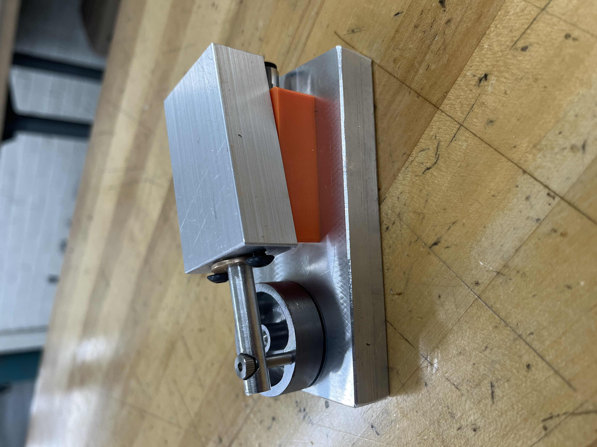

Air Engine Manufacturing
Machined the flywheel, base, piston, and piston block of a compressed air engine on a manual mill and lathe, working from part drawings I revised for repeatable manufacturing.
Overview
This project was part of EML2322L Design and Manufacturing Lab at UF. The goal was to take a compressed air engine from drawings to finished, working hardware. It covered the full path from drawing to part: revising the part drawings so they could be manufactured repeatably, then making the parts myself in the student machine shop.
Drawings and Design for Manufacturing
Before any metal was cut, I revised the part drawings for manufacturability, applying GD&T and design for manufacturing principles. Clear datums, dimensioning, and tolerance call-outs meant each part could be made and inspected the same way every time, instead of relying on guesswork at the machine.
Machining
I machined the flywheel, base, piston, and piston block on a manual mill and lathe, and hand-threaded parts where the design required it. The piston and piston block are the most demanding of these, since the piston has to fit its bore closely enough to hold air while still moving freely.
What I Learned
Making the engine showed me how much a drawing has to communicate. A tolerance or datum that looks fine on screen can be ambiguous at the machine, and fixing that on the drawing is far cheaper than fixing it on the part. It also gave me a feel for the order of operations on a manual mill and lathe, and for how fit and function depend on the parts being made to the drawing.
Gallery
Related Project
This engine's flywheel and piston interface is what the food slicer is designed to connect to. See the Air Engine Powered Food Slicer project.